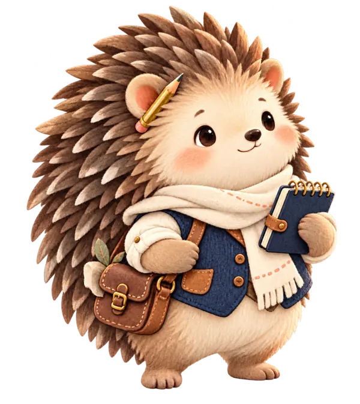
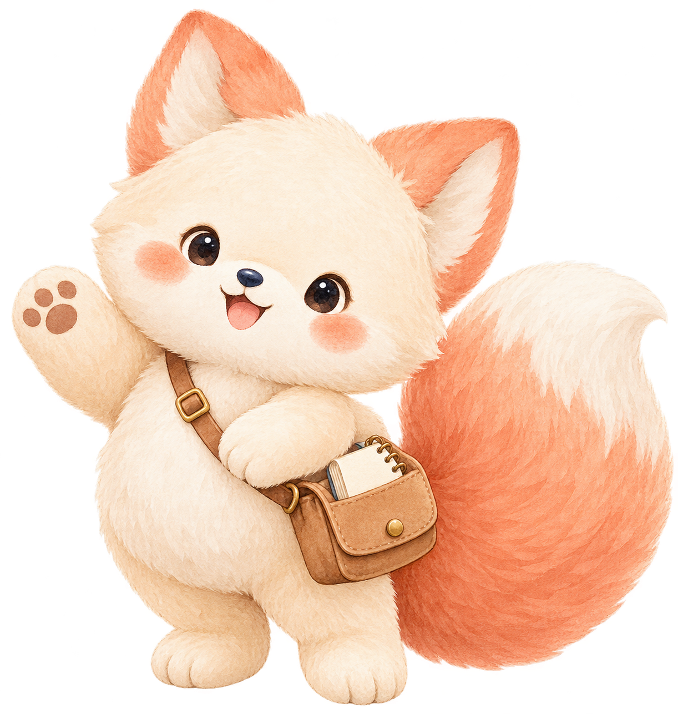
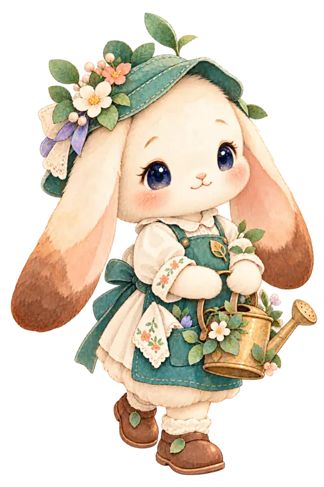
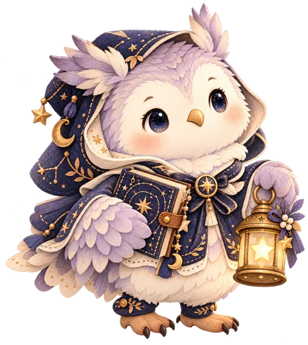

ISTJ · 약속의 기록가
고슴도치의 차분하고 단단한 실루엣, 기록장과 작은 연필. 약속을 끝까지 돌보는 이야기의 주인공.
나를 발견하는 가장 재미있는 방법
16가지 성격마을과 4가지 소다상점에서
지금의 나에게 어울리는 이야기를 골라봐!
가입 없이 무료 · 64개 조합 이야기 · 결과 공유

CHAPTER 01 · THE PERSONALITY VILLAGE
마음의 이름표를 하나 골라 봐. 나와 꼭 똑같아야 할 필요는 없어. 오늘 가장 끌리는 이야기도 좋아.
12개의 짧은 상상 장면을 골라 오늘의 이야기 유형을 추천받아 봐. 언제든 직접 바꿀 수 있어!
직접 선택하는 창작 이야기입니다. 공식 MBTI® 검사나 전문 심리 진단이 아닙니다.
지금은 세 친구의 첫 번째 원화를 확인할 수 있어. 아직 최종 승인 전이라 표정·비율·디테일은 보정될 수 있어.

고슴도치의 차분하고 단단한 실루엣, 기록장과 작은 연필. 약속을 끝까지 돌보는 이야기의 주인공.

조용히 꽃을 돌보는 토끼. 누군가를 보살피면서도 자신의 마음에 물을 주는 장면을 담았어.

책과 별등불을 든 부엉이. 남의 마음을 단정하지 않고 천천히 귀 기울이는 역할이야.
동물·직업은 이 작품 속 창작 배역이야. MBTI 유형별 실제 능력·성격을 단정하는 뜻은 아니야.
CHAPTER 02 · THE SODA SHOP
혈액형을 골라서 소다 친구를 만나 봐! 4가지 캐릭터는 재미를 위한 가상 인물이고, 혈액형과 성격의 관련성을 뜻하지 않아.
나의 이야기 보러 가기CHAPTER 03 · THE FRIENDSHIP BRIDGE
친구나 연인의 유형도 골라 봐. 점수 대신 서로에게 건넬 수 있는 한마디를 찾아줄게.
성격마을에서 나의 유형을 고르고, 상대 유형을 선택하면 이야기가 열려요.
같은 걱정도 다른 말투로 전해질 수 있어. 이번엔 어떤 대답을 건네고 싶어?
지금 내 대답은?
지금은 들어주는 게 좋을까, 아니면 같이 방법을 찾아볼까?
상대가 원하는 도움을 먼저 물으면 오해를 줄일 수도 있어.
‘너 T야?’ 밈을 소재로 만든 대화 놀이예요. T도 충분히 다정할 수 있고, F도 논리적으로 해결할 수 있어요. 대답 스타일은 유형 판정이 아닙니다.
CHAPTER 04 · THE LITTLE THEATER
어느 날의 주인공이 될까? 유형과 소다를 고르면 나만의 짧은 에피소드가 열려.
혈액형은 성격을 예측하는 과학적 지표가 아닙니다. 모든 결과는 소다상점 세계관의 창작 이야기예요.